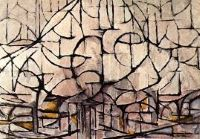
Bloeiende bomen (1912)
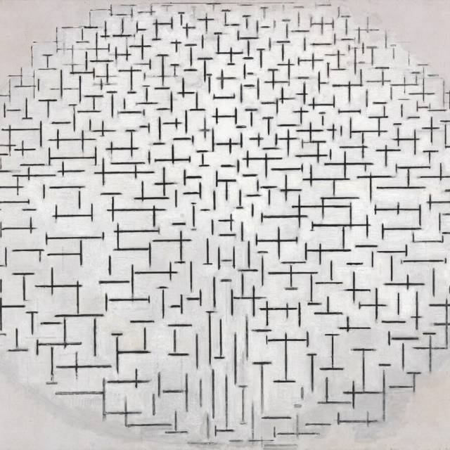
Compositie no 10 in zwart wit (1915)
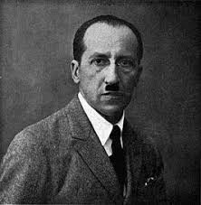
Piet Mondriaan in 1922
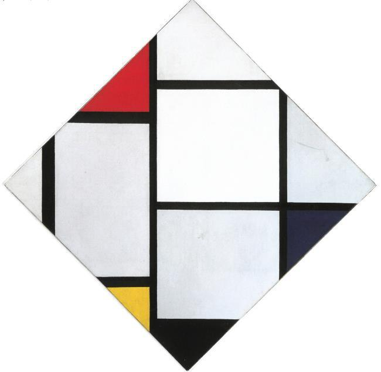
Tableau no IV (1924-25)
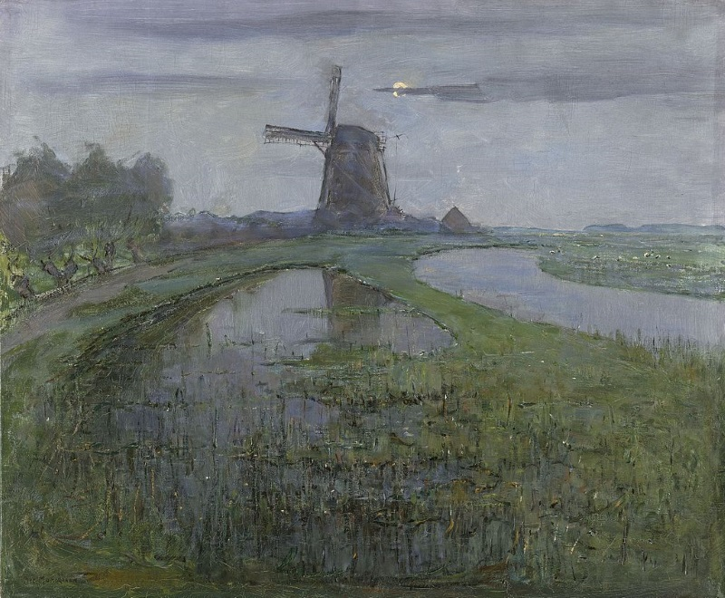
Molen aan 't Gein (1905)
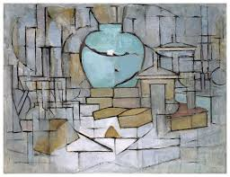
Stilleven met gemberpot II (1912)
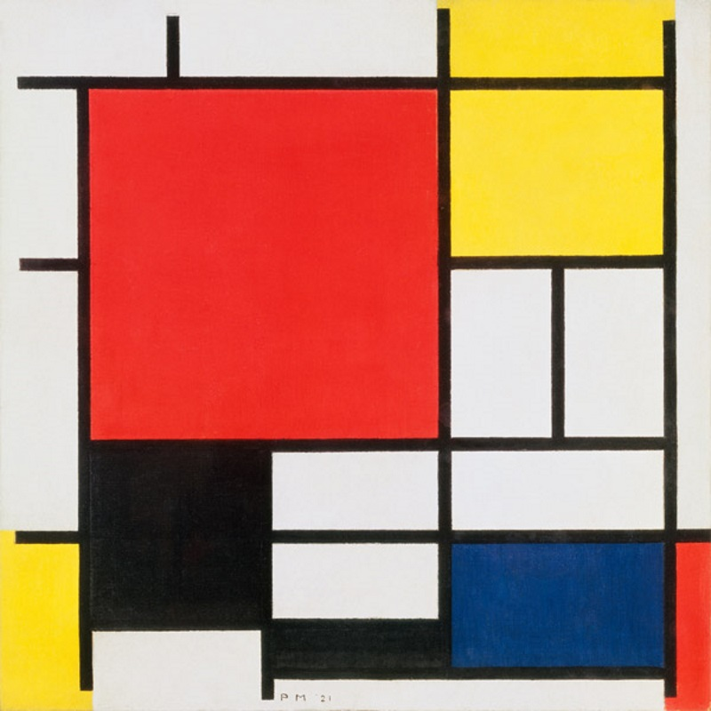
Compositie 2, in Rood, Geel en Blauw (1922)
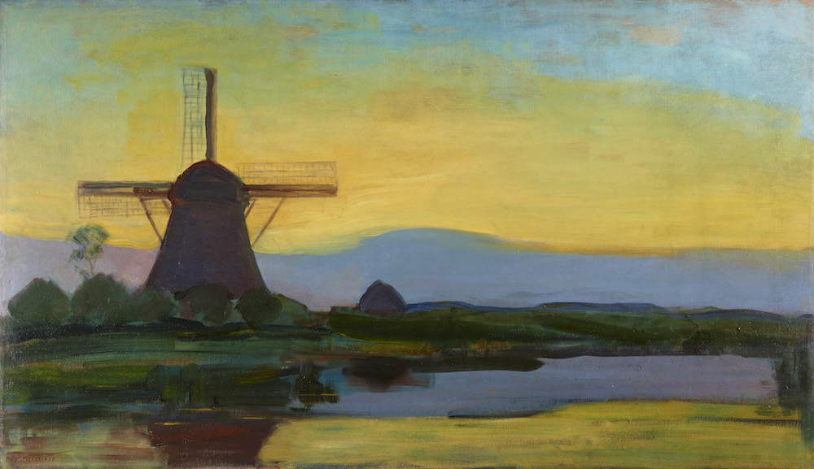
Oostzijde Molen bij avond (1907-08)
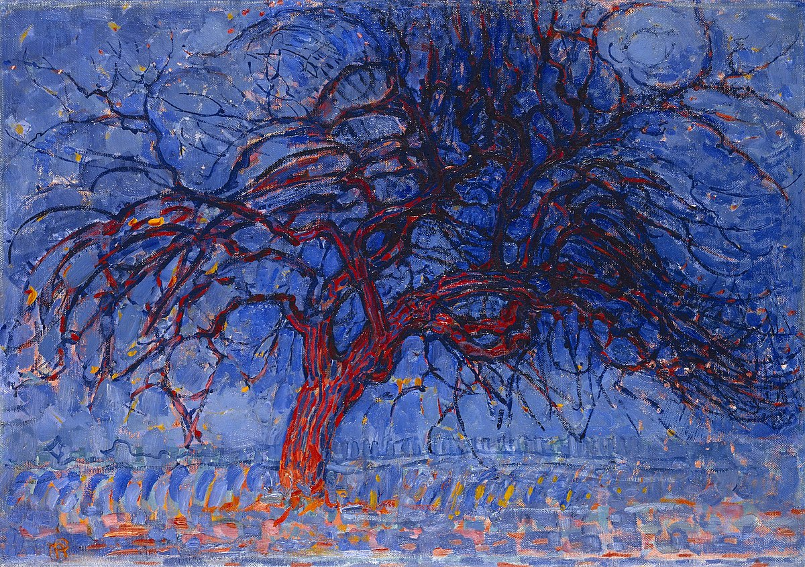
Avond; De rode boom (1908-10)
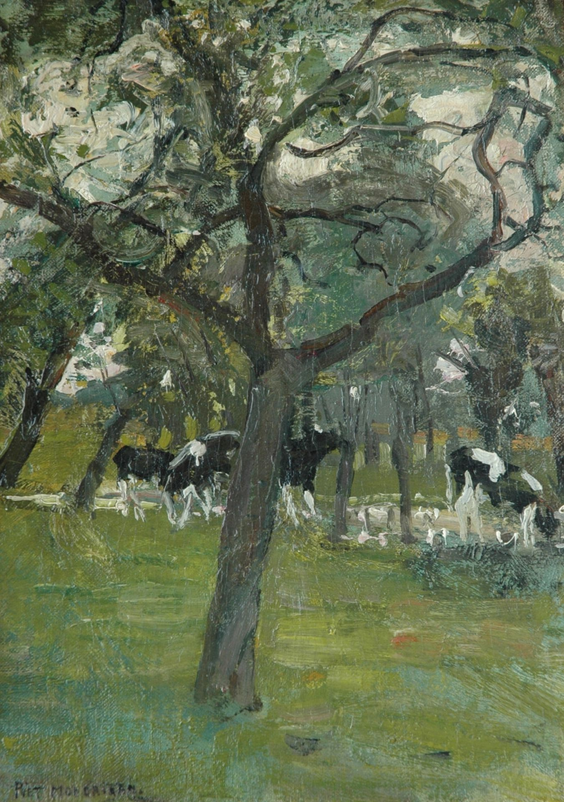
Koeien onder de bomen bij een beekje (1902-05)
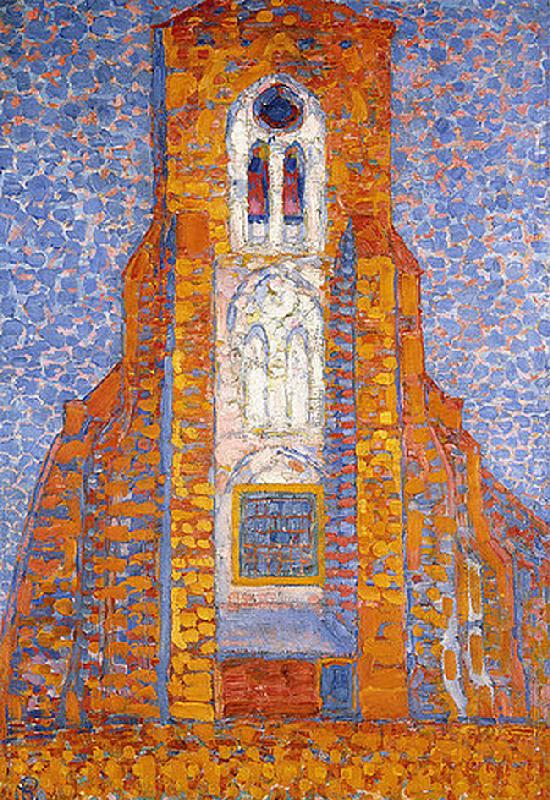
Zon, kerk in Zoutelande (1909-10)